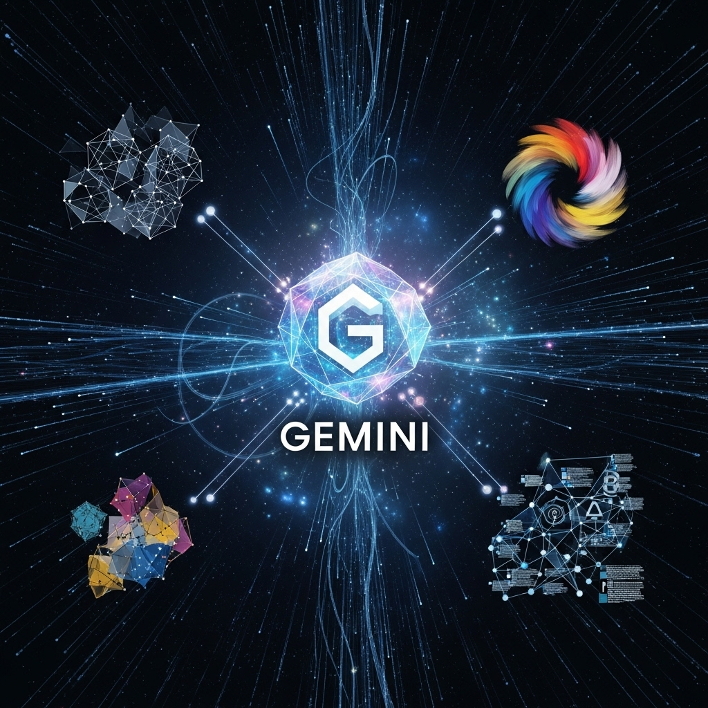

שלום לכולם,
כחלק משיפור וייעול התהליכים הדיגיטליים בבית הספר, אנו עוברים באופן מלא לשימוש ב-Google Classroom של משרד החינוך לכל שכבות הגיל, מחטיבת הביניים ועד התיכון. מעבר זה יאפשר לנו סביבת עבודה אחידה, מאובטחת ומתקדמת יותר, עם מגוון כלים שיעצימו את ההוראה והלמידה.
המדריך הזה ילווה אתכם צעד אחר צעד בתהליך המעבר, החל מההתחברות הראשונית ועד לשימוש בכלים המתקדמים ביותר בקלאסרום.
1. התחברות לבית הספר הווירטואלי וגישה ל-Google Classroom
"הבית הספר הווירטואלי" הוא השער שלכם לכל הכלים הדיגיטליים של משרד החינוך, כולל ה-Google Classroom. הכניסה אליו מתבצעת באמצעות "הזדהות אחידה", מה שמבטיח גישה מאובטחת.
שלב 1: כניסה לבית הספר הווירטואלי
- פתחו את הדפדפן (מומלץ כרום) וגשו לכתובת: https://my.edu.gov.il/home
- לחצו על כפתור "התחברות" המופיע בדף הבית של הבית הספר הווירטואלי.
- לאחר מכן, תועברו למסך ה"הזדהות אחידה" של משרד החינוך.
- הקלידו את שם המשתמש והסיסמה האישיים שלכם של משרד החינוך. אלו אותם פרטי התחברות שאתם משתמשים בהם לכניסה למערכות משרד החינוך האחרות (כמו פורטל עובדי הוראה).
- במידה ושכחתם את פרטי ההתחברות, תוכלו להתחבר באמצעות "כניסה עם קוד חד פעמי לנייד".
- אם נתקלתם בבעיה בהתחברות (לדוגמה, לא זוכרים סיסמה וגם מספר הטלפון אינו מעודכן במאגר), ניתן לפנות למרכז השירות והמידע הארצי של משרד החינוך בטלפון *6552. בנוסף, ניתן לבצע איפוס סיסמה עצמאי דרך האפשרות "שכחתי סיסמה" המופיעה במסך ההזדהות, שם תוכלו לאמת את זהותכם באמצעות תאריך הנפקת תעודת הזהות של ההורה/תלמיד/מורה.
טיפ חשוב:
ודאו שאתם מחוברים למערכת עם חשבון משרד החינוך ולא עם חשבון פרטי או של רשת עמל.
שלב 2: איתור וגישה ל-Google Classroom
- לאחר ההתחברות המוצלחת, תגיעו לדף הבית של הבית הספר הווירטואלי.
- חפשו את הקישור או האייקון של "Google Classroom" או "כיתה" (הוא לרוב מופיע בצורה בולטת בדף הראשי, או תחת תפריט "אפליקציות" / "שירותים"). לחצו עליו.
- אם זו הפעם הראשונה שאתם נכנסים ל-Classroom דרך חשבון משרד החינוך, ייתכן שתתבקשו לאשר הרשאות גישה (לדוגמה, להתממשק עם חשבון הגוגל של משרד החינוך). אשרו את כל הבקשות.
כעת אתם נמצאים ב-Google Classroom של משרד החינוך!
2. יצירת קלאסרום חדש (המבוסס על כיתה קיימת במאגר ועם שיבוץ תלמידים אוטומטי)
תהליך זה מאפשר לכם ליצור כיתת קלאסרום חדשה המקושרת ישירות לכיתה קיימת במאגר הנתונים של בית הספר, מה שמבטיח שיבוץ אוטומטי של התלמידים לכיתה.
שלב 1: איתור אפשרות יצירת קלאסרום מהמאגר
- לאחר ההתחברות המוצלחת, תגיעו לדף הבית של הבית הספר הווירטואלי.
- חפשו את "מרחבי הלימוד שלי" ותחתיו את האפשרות "פתיחת מרחבי למידה חדשים". לחצו עליה.
- במסך הבא, לחצו על כפתור "+גוגל קלאסרום".
- בחרו את הכיתה המתאימה מהרשימה המוצגת לכם. רשימה זו מכילה את הכיתות הקיימות במאגר הנתונים של בית הספר.
שלב 2: מילוי פרטי הכיתה
לאחר שבחרתם את הכיתה, ייתכן שתתבקשו לאשר או להשלים פרטים נוספים עבור כיתת הקלאסרום:
- שם הכיתה: הקפידו על שם ברור ומדויק שיכלול את המקצוע והשכבה (לדוגמה: "היסטוריה - י'1", "מתמטיקה - ז'3"). ייתכן ושם זה יוזן אוטומטית בהתאם לבחירתכם.
- מדור: ניתן להזין את המקצוע.
- נושא: לא חובה, אך אפשר להוסיף נושא כללי.
- חדר: לא חובה.
שלב 3: יצירה
- לחצו על כפתור "צור".
הכיתה החדשה שלכם נוצרה, והתלמידים המשויכים אליה במאגר הבית ספרי שובצו אוטומטית לקלאסרום זה.
סקירה כללית של ממשק הקלאסרום והלשוניות המרכזיות
לאחר הכניסה לכיתת הקלאסרום, תפגשו חמש לשוניות ראשיות (תפריטים) בחלק העליון של המסך, אשר מנהלות את הפעילות השוטפת בכיתה:
3.1 לשונית "עדכונים" (Stream)
זוהי למעשה לוח המודעות של הכיתה. כאן תוכלו לפרסם הודעות, עדכונים, קישורים רלוונטיים, או שאלות פתוחות לדיון. הודעות אלו יופיעו בפני כל תלמידי הכיתה.
3.2 לשונית "עבודת כיתה" (Classwork)
לשונית זו היא המרכז לניהול כל התכנים הלימודיים, המטלות והפעילויות. כאן תוכלו:
- ליצור נושאים (Topics): כדי לשמור על סדר, מומלץ ליצור "נושאים" לפי יחידות לימוד, נושאים מרכזיים או שבועות.
- ליצור חומרים (Material): לפרסום מצגות, קבצי קריאה, קישורים, סרטונים ועוד.
- ליצור מטלות (Assignment): להגשת עבודות, תרגילים, פרויקטים וכו', כולל הגדרת ציון, תאריך יעד והצמדה לנושא. ניתן לצרף קובץ עזר ולבחור אם התלמידים יצפו בו, יערוכו אותו, או יקבלו עותק אישי.
- ליצור שאלות: לשאלות קצרות ומהירות עם תשובה קצרה או בחירה מרובה.
- ליצור בוחן מטלה: ליצירת מבחנים ובוחנים באמצעות Google Forms.
3.3 לשונית "אנשים" (People)
כאן תוכלו לנהל את המשתתפים בכיתה:
- הוספה והסרה של תלמידים: הזמנת תלמידים חדשים (אם לא שובצו אוטומטית) או הסרת תלמידים מהכיתה.
- הזמנת מורים נוספים: הזמנת מורים שותפים (Co-teachers) שישתפו איתכם פעולה בניהול הכיתה, פרסום תכנים ובדיקת מטלות.
3.4 לשונית "ציונים" (Grades)
לשונית זו מציגה את כל הציונים וההגשות של התלמידים בכיתה במבט אחד. כאן תוכלו:
- לצפות ברשימת המטלות והציונים שהוגשו.
- לגשת במהירות לבדיקת מטלות תלמידים.
- לקבל תמונה כוללת של התקדמות הכיתה.
3.5 לשונית "ניתוח נתונים" (חדש!) (Data Analysis - New!)
לשונית חדשנית זו מספקת תובנות מבוססות נתונים על הלמידה בכיתה:
- מעקב אחר התקדמות: הצגת דוחות וגרפים על ביצועי התלמידים במטלות השונות.
- זיהוי דפוסי למידה: איתור נקודות חוזק וחולשה בכיתה או אצל תלמידים ספציפיים.
- מעורבות תלמידים: קבלת מידע על רמת המעורבות של התלמידים בפעילויות השונות בקלאסרום.
כלי זה מאפשר למורים לקבל תמונה מקיפה יותר על תהליך הלמידה ולבצע התאמות פדגוגיות בהתאם.
4. פרסום חומרים ומטלות בקלאסרום
כפי שפורט בלשונית "עבודת כיתה", הקלאסרום הוא המרכז לפרסום תכנים:
- לפרסום הודעה כללית או עדכון: השתמשו בלשונית "עדכונים".
- ליצירת נושאים, חומרים ומטלות לימודיות: עברו ללשונית "עבודת כיתה".
לחיצה על כפתור "יצירה" תפתח בפניכם את האפשרויות ליצירת חומרים, מטלות, שאלות או בחנים.
זכרו לשייך כל פריט לנושא מתאים כדי לשמור על סדר.
עדכונים צפויים:
בקרוב יתווספו לקלאסרום אופציות מתקדמות נוספות לפרסום תכנים ויצירת מטלות, שינצלו יכולות בינה מלאכותית (AI) וכלי גוגל חדשים:
- שימוש ב-Gemini (ג'מיני): שילוב יכולות ג'מיני ליצירת מטלות מגוונות, בניית בחנים והפקת תוכן לימודי מתקדם באופן מהיר ויעיל.
- שילוב Notebook לתכנון שיעורים: שימוש בלוחות הדיגיטליים של Notebook (לשעבר Jamboard) לא רק לפעילות עם תלמידים, אלא גם לתכנון שיעורים אישי וארגון חומרים למורים.
- Read Along: כלי המאפשר תרגול קריאה עם משוב בזמן אמת, שיכול להשתלב כפעילות העשרה או מטלה לתלמידים.
- Vids (גוגל וידס): כלי חדש ליצירת סרטונים קצרים ועריכתם, שיוכל לשמש מורים ותלמידים להפקת תוכן ויזואלי עשיר.
5. בדיקת מטלות ומתן משוב
תהליך בדיקת המטלות ומתן המשוב מתבצע בעיקר דרך לשונית "עבודת כיתה" ולשונית "ציונים":
גישה למטלות שהוגשו:
- בכרטיסיית "עבודת כיתה", לחצו על המטלה הרצויה.
- תראו סיכום של מספר התלמידים שהגישו, שהוקצו להם ושלא הגישו.
- לחצו על "הצגת מטלה" כדי לראות את כל ההגשות.
בדיקה ומתן ציון:
- לחצו על הגשת תלמיד כדי לפתוח אותה בממשק הבדיקה.
- ניתן לסמן הערות ישירות על המסמך (אם מדובר במסמך Google Docs/Slides/Sheets).
- בצד ימין, תראו תיבת ציון ותיבת משוב פרטי לתלמיד.
- לאחר מתן ציון וכתיבת משוב, לחצו על "החזרה" כדי שהתלמיד יקבל את הציון והמשוב.
מעקב ציונים:
- כרטיסיית "ציונים" מאפשרת לכם לראות את כל הציונים של הכיתה במבט אחד ולעקוב אחר התקדמות התלמידים.
6. שימוש ב-Google Meet (וידאו) בתוך הקלאסרום
Google Meet משולב ישירות בקלאסרום ומשמש לשיעורים מקוונים, פגישות עם תלמידים, הדרכות ועוד.
הפעלה מהירה של Meet מהכיתה:
- בכרטיסיית "עדכונים" (Stream) של כל כיתה, תראו קישור קבוע של Google Meet.
- לחצו עליו כדי להתחיל שיחת וידאו באופן מיידי עם כל חברי הכיתה.
הערה:
רק מורים יכולים להתחיל שיחה דרך קישור זה. התלמידים יכולים להצטרף ברגע שהמורה פותח את השיחה.
תזמון שיחות Meet:
- ניתן לתזמן שיחות Meet דרך Google Calendar (אליו ניתן לגשת גם דרך סרגל האפליקציות של גוגל).
- כאשר אתם יוצרים אירוע ביומן, תוכלו לצרף לו קישור Meet ולשלוח הזמנות לתלמידים.
7. שימוש בלוח ציור דיגיטלי (לשעבר Jamboard) בתוך הקלאסרום
לוח ציור דיגיטלי אינטראקטיבי, כמו זה המשולב ב-Google Meet או אפליקציית Google Whiteboard, הוא כלי מעולה לסיכומים, ניתוח חומרים, יצירת מערכי שיעור, סדנאות משותפות ועוד.
יצירת לוח ציור דיגיטלי:
- כאשר אתם יוצרים "חומרים" או "מטלות" בלשונית "עבודת כיתה", לחצו על כפתור "הוסף" (Add) ואז בחרו באפשרות "לוח דיגיטלי" (או חפשו "לוח לבן" / "Whiteboard" ברשימת היישומים).
- תוכלו ליצור לוח חדש או לבחור לוח קיים מהדרייב שלכם.
רעיונות לשימוש:
- סיכומי שיעור משותפים: תלמידים יכולים לכתוב, לצייר ולהוסיף תמונות לסיכום משותף.
- סיעור מוחות: כלי מצוין לסיעור מוחות קבוצתי.
- ניתוח טקסטים/מקורות: הדבקת קטעי טקסט ואפשרות לסמן, להוסיף הערות ודיונים.
- יצירת מערכי שיעור חזותיים: אתם יכולים להכין מערך שיעור אינטראקטיבי עם תמונות, סרטונים וקישורים.
- יצירת פודקסטים: ניתן להקליט אודיו ולהעלות ללוח הדיגיטלי כחלק מפעילות חקר או הצגה. (הקלטה חיצונית והעלאה של הקובץ).
8. יצירת מצגת Slides עם תוסף Plus AI
Plus AI הוא תוסף מבוסס AI ל-Google Slides המאפשר יצירה ועיצוב אוטומטי של מצגות.
שלב 1: התקנת התוסף (אם עדיין לא מותקן)
- פתחו מצגת Google Slides חדשה או קיימת.
- לכו לתפריט "הרחבות" (Extensions) > "תוספים" (Add-ons) > "הורד תוספים" (Get add-ons).
- חפשו "Plus AI for Google Slides" והתקינו אותו. ייתכן שתצטרכו לאשר הרשאות.
שלב 2: יצירת מצגת עם Plus AI
- לאחר ההתקנה, פתחו מצגת חדשה או קיימת.
- לכו לתפריט "הרחבות" (Extensions) > "Plus AI" > "New Presentation / Edit with Plus AI".
- הזינו את נושא המצגת ואת הנקודות העיקריות שברצונכם לכלול.
- Plus AI ייצור עבורכם סליידים עם עיצוגים מוצעים, טקסט ראשוני ואף תמונות רלוונטיות.
- תוכלו לערוך ולשנות את המצגת לפי הצרכים שלכם.
יתרונות:
חיסכון זמן משמעותי ביצירת מצגות, עיצובים מקצועיים, וסיוע בהפקת רעיונות.
9. סיוע באמצעות Gemini מתוך הקלאסרום
ג'מיני (Gemini) הוא מודל ה-AI של גוגל, והוא משולב באופן הולך וגובר במוצרי גוגל, כולל הקלאסרום.
- שילוב Gemini (ג'מיני) בדוקס: בקרוב תורחב האינטגרציה של ג'מיני ישירות בתוך Google Docs, שתאפשר סיוע מתקדם בכתיבה, ניסוח, סיכום והפקת רעיונות, מה שישדרם את תהליכי יצירת התוכן והלמידה.
- סיוע בכתיבה: בתוך Google Docs (שמשולב בקלאסרום), תוכלו למצוא כלי עזרה לכתיבה (כמו "עזור לי לכתוב" או "Help me write") שיכולים לסייע בניסוח הוראות למטלות, יצירת חומרי קריאה או בניית מבחנים. טרם נפתח למשתמש ארגוני.
- סיכום טקסטים: כלי AI מובנים יכולים לסכם עבורכם טקסטים ארוכים, מה שיכול להיות שימושי להכנת חומרי לימוד.
- יצירת רעיונות: שאלו את ג'מיני שאלות ספציפיות בנוגע לשיעור, נושא או פעילות, והוא יוכל לספק לכם רעיונות לשיעור, שאלות לדיון, או כיווני חשיבה.
הערה חשובה:
הכלים האלה מתפתחים במהירות. מומלץ לבדוק באופן קבוע את עדכוני Google Workspace כדי לראות אילו יכולות חדשות נוספו.
10. היכרות עם כלי עזר של Gemini המשולבים בקלאסרום (טרם נפתח בעברית)
כיום, רוב היכולות המתקדמות של ג'מיני המשולבות ישירות בקלאסרום, כמו יצירת בחנים או סיכומים אוטומטיים מתוך תכני הכיתה, עדיין אינן זמינות במלואן בעברית. עם זאת, חשוב להיות מודעים לפוטנציאל ולצפות לפיתוחים אלו:
מה צפוי?
- יצירת בחנים אוטומטיים: ג'מיני יוכל לנתח את חומרי הלימוד שפרסמתם וליצור בחנים ושאלות הערכה באופן אוטומטי.
- סיכומים חכמים: סיכומים אוטומטיים של דיונים בכיתה, חומרי קריאה או קטעי וידאו.
- התאמה אישית: ג'מיני יוכל לסייע בהתאמת תכנים ופעילויות לתלמידים שונים, על בסיס נתוני הלמידה שלהם.
- משוב אוטומטי (חלקי): סיוע במתן משוב ראשוני על מטלות פשוטות.
המלצה:
למרות שזה לא זמין בעברית עדיין, מומלץ לעקוב אחר ההתפתחויות והעדכונים מגוגל בנושא. ברגע שיהיו עדכונים רלוונטיים, אדאג ליידע אתכם ולספק הדרכה ייעודית.
11. העברת כל התוכן מ-Google Drive של רשת עמל ל-Google Drive של משרד החינוך (במכה אחת)
הכלי המתאים לכך הוא Google Takeout. הוא מאפשר לך לייצא את כל הנתונים שלך ממוצרי גוגל שונים, כולל Drive, ולאחר מכן להעלות אותם מחדש.
חשוב:
שימו לב שתהליך זה מעביר את הקבצים עצמם. אם יש לכם קבצים מסוג Google Docs, Sheets, Slides וכו' (שהם "קבצים מקוריים" של גוגל), הם יומרו לפורמטים של Microsoft Office (לדוגמה, מסמך Google Docs יירד כקובץ Word .docx).
שלב 1: ייצוא כל הנתונים מ-Google Drive של רשת עמל באמצעות Google Takeout
- התחברו לחשבון הגוגל שלכם השייך לרשת עמל.
- גשו לכתובת Google Takeout: https://takeout.google.com/
- בדף הראשון של Takeout, תראו רשימה ארוכה של שירותי גוגל. בדרך כלל כולם מסומנים.
- לחצו על "ביטול בחירת הכל" (Deselect all) כדי לבטל את הסימון מכל השירותים.
- גללו מטה ובחרו רק בתיבה שליד "Drive" (סמנו אותה ב-V).
- אם יש לכם תוכן שתרצו להעביר גם משירותים אחרים (כמו תמונות מ-Photos, או מיילים מ-Gmail), תוכלו לסמן אותם גם כן, אך כרגע נתמקד ב-Drive.
- גללו שוב מטה ולחצו על כפתור "השלב הבא" (Next step).
- הגדירו את פרטי הייצוא:
- שיטת שליחה (Delivery method): בחרו "שלח קישור להורדה באמצעות אימייל" (Send download link via email). זו האפשרות הנפוצה והנוחה ביותר.
- תדירות (Frequency): בחרו "ייצא פעם אחת" (Export once).
- סוג קובץ וגודל (File type & size):
- סוג קובץ: השאירו "zip." (זהו פורמט דחיסה סטנדרטי).
- גודל ארכיון: בחרו גודל ארכיון שמתאים לכמות הנתונים שלכם. אם אינכם בטוחים, בחרו גודל גדול יחסית (לדוגמה, 10GB או 50GB). אם הנתונים שלכם חורגים מהגודל שבחרתם, גוגל תפצל אותם למספר קבצי ZIP.
- לחצו על כפתור "יצירת ייצוא" (Create export).
- המתינו לסיום התהליך: גוגל תתחיל לארוז את כל הנתונים שלכם מ-Drive. תהליך זה יכול לקחת שעות רבות, ואף ימים, תלוי בכמות המידע שיש לכם. אין צורך להשאיר את המחשב פתוח. תקבלו התראה במייל (לחשבון עמל שלכם) כשהתהליך יסתיים.
- הורידו את קובץ/י ה-ZIP: ברגע שתקבלו את המייל, יהיה בו קישור/ים להורדת קבצי ה-ZIP המכילים את כל הדרייב שלכם. הורידו את כל הקבצים למחשב שלכם.
שלב 2: העלאת כל התוכן ל-Google Drive של משרד החינוך
- התחברו לחשבון הגוגל שלכם השייך למשרד החינוך (ודאו שאתם מחוברים לחשבון הנכון שמסתיים ב-@edu.org.il).
- גשו ל-Google Drive של חשבון משרד החינוך שלכם.
- חלצו את התכנים מקובץ/י ה-ZIP:
- לכו לתיקייה במחשב שבה הורדתם את קבצי ה-ZIP.
- לחצו קליק ימני על קובץ ה-ZIP הראשון (אם יש מספר קבצים).
- בחרו באפשרות "חלץ הכל..." (Extract All...) או השתמשו בתוכנת כיווץ/חילוץ אחרת (כמו WinRAR או 7-Zip). זה יפתח את תוכן ה-ZIP לתיקייה חדשה במחשב שלכם, תוך שמירה על מבנה התיקיות שהיה לכם בדרייב.
- חזרו על הפעולה עבור כל קבצי ה-ZIP שהורדתם, אם התוכן פוצל למספר קבצים.
- העלו את התוכן ל-Drive של משרד החינוך:
- גררו ושחררו (Drag and Drop) את כל התיקיות והקבצים שחילצתם ישירות לתוך חלון ה-Google Drive של משרד החינוך בדפדפן.
- לחלופין: ב-Google Drive של משרד החינוך, לחצו על כפתור "+חדש" (New) בפינה השמאלית העליונה.
- בחרו "העלאת תיקייה" (Folder upload) ובחרו את תיקיית הבסיס שמכילה את כל התוכן שחילצתם מה-ZIP.
- או בחרו "העלאת קובץ" (File upload) אם תרצו להעלות קבצים בודדים.
חשוב לדעת על קבצי גוגל שהומרו:
קבצים מקוריים של גוגל (כמו Google Docs, Sheets, Slides) יורדו בפורמטים של Microsoft Office. כאשר תעלו אותם מחדש ל-Drive של משרד החינוך, הם יישמרו כקבצי Office. אם תרצו להמיר אותם בחזרה לפורמט של גוגל (כדי לעבוד עליהם באונליין עם שיתוף פעולה בזמן אמת), תצטרכו לפתוח כל קובץ ב-Drive של משרד החינוך וללכת ל"קובץ" (File) > "שמור כגוגל דוקס/שיטס/סליידס" (Save as Google Docs/Sheets/Slides).
12. תוספת למדריך: יצירת אתרים, אפליקציות ומשחקים עם Gemini Canvas
מה זה Gemini Canvas?
Gemini Canvas הוא מרחב עבודה אינטראקטיבי חדש בתוך Google Gemini (בינה מלאכותית של גוגל), שנועד להקל על תהליכי יצירה, ליטוש ושיתוף של עבודות. הוא מאפשר לך, באמצעות הנחיות טקסטואליות פשוטות, לייצר קוד לאפליקציות אינטרנטיות, דפי אינטרנט, משחקים, אינפוגרפיקות, מסמכים ועוד, ולראות תצוגה מקדימה חיה של היצירה שלך בזמן אמת. זהו כלי המאפשר "קידוד חזותי" (Visual Coding) ויצירת אבות-טיפוס מהירים גם ללא ידע עמוק בתכנות.
כיצד Gemini Canvas יכול לשמש אותנו בפדגוגיה דיגיטלית?
Gemini Canvas פותח עולם חדש של אפשרויות ללמידה ויצירה בשיעורים שונים:
יצירת עזרי למידה אינטראקטיביים:
- דפי אינטרנט חינוכיים: צרו דפי אינטרנט פשוטים ואינטראקטיביים שיציגו מידע בנושא נלמד, עם שילוב של טקסט, תמונות ואלמנטים אינטראקטיביים (כמו כרטיסיות מידע או תרשימים).
- אפליקציות קטנות/ווידג'טים: בנו אפליקציות רשת פשוטות למטרות למידה, לדוגמה: מחשבון נושא ספציפי במתמטיקה, סימולציה קצרה בתחום המדעים, או כלי להזנת נתונים קצרים לניתוח.
- משחקים לימודיים בסיסיים: צרו משחקים קצרים ופשוטים (לדוגמה: משחקי התאמה, זיכרון, או חידונים אינטראקטיביים) כדי לתגבר חומר נלמד או להעריך ידע בצורה מהנה.
- אינפוגרפיקות אינטראקטיביות: הציגו מידע מורכב (לדוגמה, ציר זמן היסטורי, תהליך מדעי) באופן ויזואלי ומובנה שקל יותר להבין ולנווט בו.
העצמת לומדים ויצירת פרויקטים:
- פרויקטים אישיים/קבוצתיים: תלמידים יכולים להשתמש ב-Gemini Canvas ליצירת פרויקטים יצירתיים, כמו דפי אינטרנט המסכמים נושא מחקר, משחקון הממחיש עיקרון לימודי, או יישום קטן המציג נתונים שאספו.
- לימוד יסודות תכנות (גם למתחילים): הכלי מאפשר לראות כיצד הנחיות טקסטואליות הופכות לקוד (HTML/CSS/JavaScript/React), ובכך מוריד את חסמי הכניסה לעולם התכנות ומאפשר למידה באמצעות ניסוי וטעייה.
- כלי לסיעור מוחות וניסוח: מעבר ליצירת קוד, Canvas משפר גם את יכולות הכתיבה והניסוח, ומאפשר ליצור טיוטות, ללטש טקסטים אקדמיים, לכתוב נאומים ועוד, בשיתוף פעולה עם ה-AI.
כיצד לגשת ל-Gemini Canvas?
- דרך אתר Gemini: גשו לכתובת gemini.google.com.
- כניסה ל-Canvas:
- באזור כתיבת הפרומפטים (השאלות/ההנחיות) בתחתית המסך, חפשו ובחרו באפשרות "Canvas" (זה יכול להופיע כאייקון או כבחירה ברשימה).
- לחלופין, תוכלו לגשת ישירות ל-Canvas באמצעות הקישור: gemini.google.com/canvas
דגשים חשובים:
- זמינות: יכולת זו זמינה בדרך כלל למשתמשים מעל גיל 18 וללקוחות Google Workspace בעלי תוספים רלוונטיים (כמו Gemini Business, Gemini Enterprise, Gemini Education, Gemini Education Premium).
- ניסוי וטעייה: עודדו את התלמידים והמורים להתנסות עם הכלי, להבין את הפוטנציאל שלו ולשלב אותו ביצירת תוכן לימודי מותאם אישית.
המלצות
כאן תוכלו למצוא המלצות לכלים וערוצים שיכולים לסייע לכם בהוראה ובלמידה דיגיטלית: